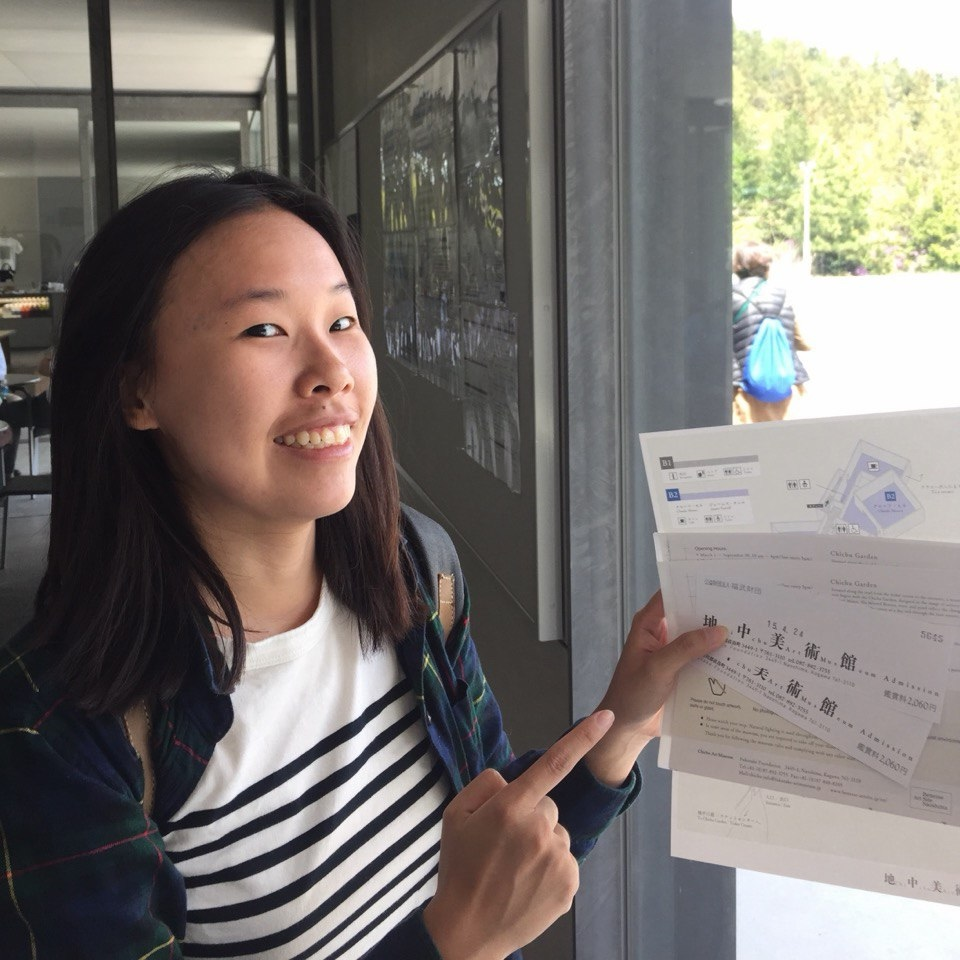

Yishu See

About
My name is Yishu (like a GitHub issue). My interest lies in tool design which has led me to explore areas such as programming languages and code bundling. I'm drawn to problems that reward taste.
Previously I worked on ads and marketplaces at Shopify, built web fundamentals at Carousell, and helped early start-up founders scale at Shiip.
I received my BEng in Electrical Engineering from National University of Singapore, concentrating on human-computer interaction.
I run a weekend cafe at home.
Highlights
- Recurse Center (2020) where I got to meet other language design enthusiasts
- Talk - JSConf.Asia: Designing Components for Fun, Profit and Sanity (2019)
Interests
I'm always excited to talk about:
- Tools. Especially personal knowledge management, spaced repetition and code editors.
- Programming language and type system
- Puzzles. I'm a regular attendant at Puzzled Pint and participated in the CMU Puzzle Hunt 2025 and supported the Singapore team at MIT Mystery Hunt.
- Malleable software
- Board games. I own 92 and have recorded plays of 382 games. My favorite mechanism is dice selection.
- Climbing
- Food and coffee
Misc
This website is made as simple as possible and you can see its history here.